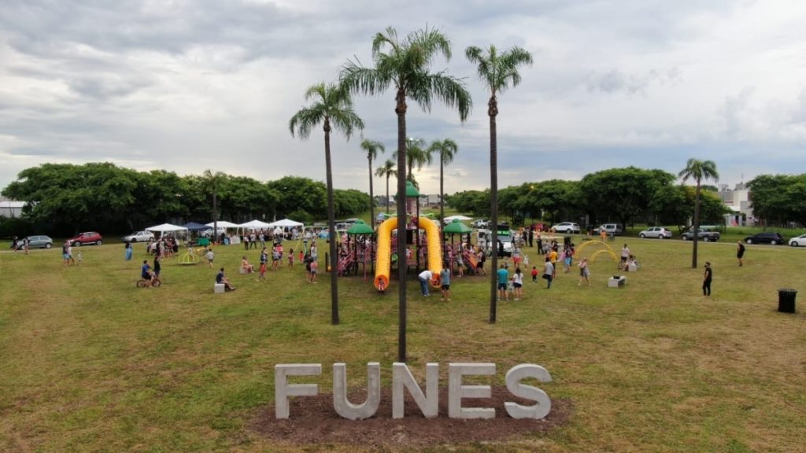
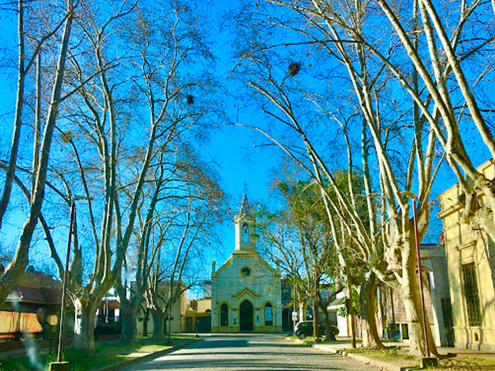
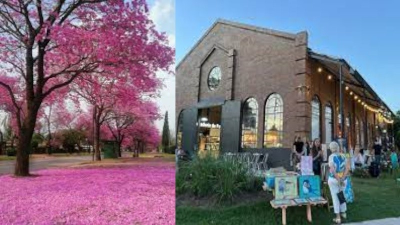

PARA HOYDescubrí qué pasa cerca tuyoVer agenda →
La guía local de Funes
Comercios, servicios, beneficios y eventos de la ciudad en una guía simple, ágil y pensada para llevar siempre con vos.

Una ciudad, una guía
Funes Cerca conecta a quienes viven, trabajan o visitan la ciudad con todo lo que tienen alrededor.
Buscá por rubro, explorá el mapa y encontrá rápidamente información para elegir mejor: desde dónde comer hasta quién puede resolverte algo hoy.
Entrar a la guía ↗
Pensada para el día a día
La información que necesitás, organizada para decidir rápido y conectar directamente con cada propuesta local.
Explorá por zona
Descubrí qué tenés cerca y elegí a partir de tu ubicación.
Oportunidades locales
Siempre a mano
Sumá Funes Cerca a la pantalla de inicio y accedé cuando la necesites, sin buscarla de nuevo.
PWA · Web instalable¿Qué necesitás hoy?
Una guía abierta a todo lo que hace funcionar la ciudad. Elegí una categoría y empezá a explorar.
Bares, restaurantes, cafés y propuestas para disfrutar.
Profesionales y oficios para resolver lo que necesitás.
Centros, especialistas, farmacias y atención profesional.
Construcción, mantenimiento, decoración y soluciones.
Locales, productos y marcas que forman parte de Funes.
La ciudad completa, organizada para encontrar más fácil.
Encontrar es así de fácil
Escribí un nombre o elegí entre las categorías disponibles.
Revisá la información y ubicá cada opción en el mapa.
Elegí la propuesta indicada y comunicate con el comercio.

Para comercios y profesionales
Formá parte de una guía creada para conectar a la comunidad con la oferta local.
Mostrá tu propuesta frente a personas que ya están buscando en la ciudad.
Reuní tus datos, ubicación y canales de contacto en un perfil fácil de consultar.
Facilitá que cada persona pase de buscar a escribirte.
Funes Cerca va con vos
No necesitás buscarla cada vez. Podés agregarla a la pantalla de inicio de tu celular y entrar con un toque.
Preguntas frecuentes
Si tu pregunta no está acá, escribinos y te ayudamos.
Consultar por WhatsApp ↗Es una guía comercial y comunitaria para descubrir comercios, servicios, beneficios y actividades de Funes desde un solo lugar.
No. Funciona desde el navegador y, por ser una PWA, también podés agregarla a la pantalla de inicio para usarla como una app.
Podés usar el buscador, entrar por categoría o explorar las opciones disponibles en el mapa.
Escribinos por WhatsApp. Te contamos cómo incorporar tu propuesta y qué información necesitamos para publicarla.
La plataforma está pensada para que los contenidos, propuestas y datos puedan mantenerse al día sin que tengas que instalar nuevas versiones.